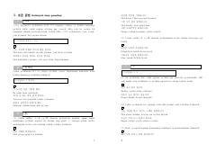

KTKoreys tili grammatik qoidalari va qo'shimchalarining o'zbekcha izohli to'plami.
Ushbu qo'llanma koreys tili grammatik qoidalari, suffikslari va iboralarining qo'llanilish holatlarini batafsil tushuntirib beradi. Har bir grammatik mavzu o'zbek tilidagi tarjimasi va amaliy misollar bilan boyitilgan. Koreys tilini mustaqil hamda ustoz nazorati ostida o'rganuvchilar uchun mo'ljallangan.